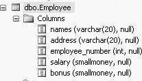
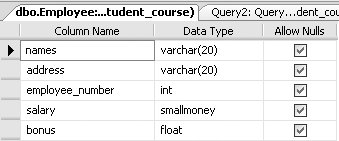
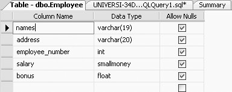
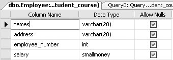

|
|
|
3.5. The ALTER TABLE CommandIn the last few sections we looked at how to add, change, and update rows in a table with the INSERT and UPDATE commands. In this section, we discuss how you can add, change (modify), and delete columns in a table's definition by using SQL's ALTER TABLE command. ALTER TABLE commands are known as data definition (DDL) commands, because they change the definition of a table. 3.5.1. Adding a Column to a TableYou may add columns to a table with little difficulty. The general syntax for adding a column to a table is: ALTER TABLE Tablename ADD column-name type For example, to add a column called bonus (a SMALLMONEY column) to the Employee table, you type in the following: ALTER TABLE Employee ADD bonus SMALLMONEY This command alters the table definition of the Employee table, as shown in Figure 3-3 (to get Figure 3-3, click on the + beside the Employee table and then click on the + beside Columns--in the Object Explorer on the left side of your screen):
Figure 3-3. Column added to Employee tableWhen columns are added to existing tables, they will initially contain null values. Data may be added to the new column using an UPDATE command. 3.5.2. Changing a Column's Data Type in a TableIn SQL Server , you can change a column's data type with existing data in it, provided that the new column data type will accommodate the existing data. The general syntax for changing a column's data type in a table is: ALTER TABLE Tablename ALTER COLUMN column-name new_type For example, to change the data type of the bonus column from SMALLMONEY to FLOAT, you would type the following: ALTER TABLE EMPLOYEE ALTER COLUMN bonus FLOAT This query would produce the table definition of the Employee table shown in Figure 3-4.
Figure 3-4. Altered column's data type for bonus column in the Employee table
3.5.2.1. Changing a column's length in a tableYou may want to change the size of a column in a table. You typically make a column larger, and SQL Server will not have a problem with that, because larger columns will accommodate existing data. But, if you want to make a column smaller (which is unusual), sometimes SQL Server will let you do it and other times it will not. When will SQL Server allow you to reduce the length of your column without any problems?
If you try to reduce the column size to a size where you would be cutting off some of the data, SQL Server will give you an error and will not let you do it. For example, if you type in the following ALTER TABLE command, trying to change the names column of the Employee table to a size of 5 (where you would be losing some data): ALTER TABLE Employee ALTER COLUMN names VARCHAR(5) You will get the following error message: Msg 8152, Level 16, State 14, Line 1 String or binary data would be truncated. The statement has been terminated. And, upon viewing the table definition of the Employee table, you will find that the column size of the names column was not altered. If, however, you type: ALTER TABLE Employee ALTER COLUMN names VARCHAR(19) You will get the message: Command(s) completed successfully. Now if you look at the table definition of the Employee table, you will see that the names column has been changed to a size of 19 characters, as shown in Figure 3-5.
Figure 3-5. Altering a column's length in the Employee tableBut before you can view this change, you may have to refresh the Employee table. SQL Server allowed this reduction in column size, as all the data in the names column was less than 19 characters in length. Before you proceed to the following section, please change the size of the names column back to 20. 3.5.3. Deleting a Column from a TableThe following is the general syntax for deleting a column from a table: ALTER TABLE Tablename DROP column column-name For example, to delete the column called bonus from the Employee table, type the following: ALTER TABLE Employee DROP column bonus This query produces the definition of the Employee table shown in Figure 3-6, which matches the original design for the table shown in Figure 3-2.
Figure 3-6. Design of Employee table after dropping a column
We will discuss a few other uses of the ALTER TABLE command in subsequent chapters. For example, you can use it to define or change a default column value, enable or disable an integrity constraint, manage internal space, and so on. |
|
|
|